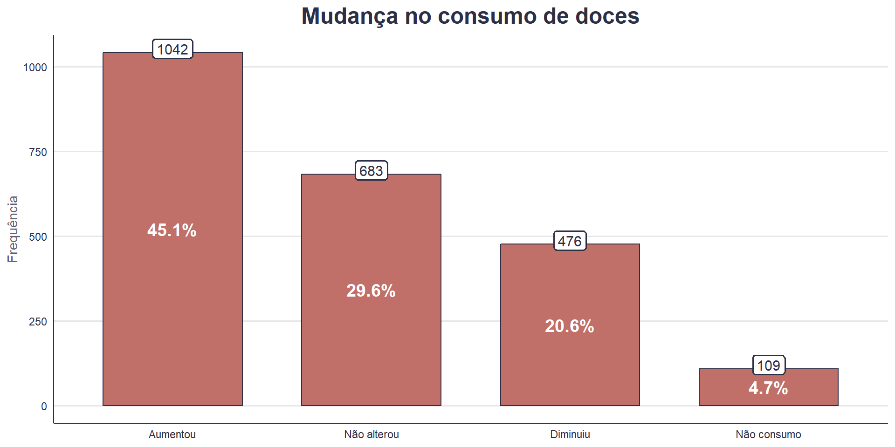
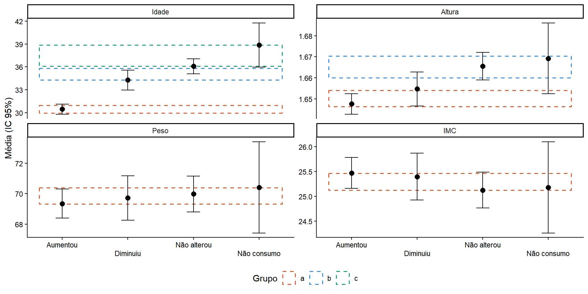
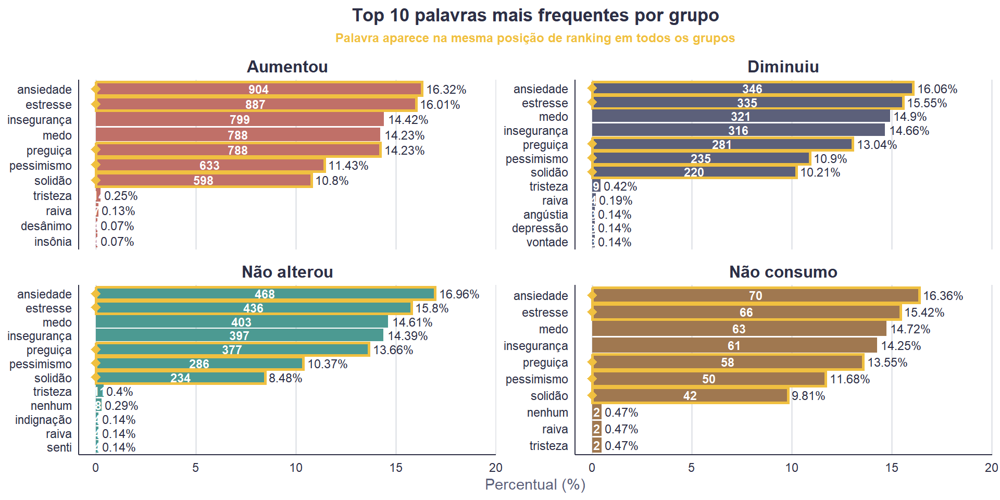
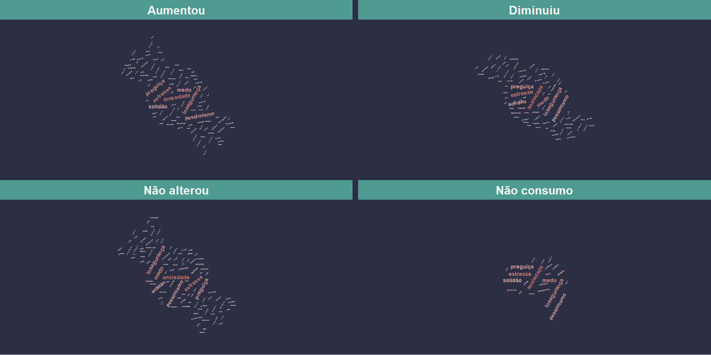

ATIVIDADE AVALIATIVA 6
Universidade Federal Fluminense
11/05/2026
Contexto
Motivação
Mudanças na rotina influenciaram o comportamento alimentar;
Fatores emocionais (estresse, ansiedade) ganharam relevância;
Possível aumento no consumo de alimentos ultraprocessados;
Destaque para o consumo de doces.
Problema de pesquisa
Variável Desfecho
Variáveis Explicativas
Origem
Amostra
Resumo da estrutura das variáveis
Estutura das variáveis
| Variável | Tipo | Classificação |
|---|---|---|
| Gênero | Categórica | Nominal dicotômica |
| Raça/Cor | Categórica | Nominal politômica |
| Região | Categórica | Nominal politômica |
| Isolamento | Categórica | Nominal dicotômica |
| Trabalha | Categórica | Nominal dicotômica |
| Profissional Saúde | Categórica | Nominal dicotômica |
| Renda familiar | Categórica | Ordinal |
| Escolaridade | Categórica | Ordinal |
| Covid | Categórica | Nominal dicotômica |
| Consulta Nutricionista | Categórica | Nominal dicotômica |
| Dificuldade Financeira | Categórica | Nominal dicotômica |
| Acesso Alimento | Categórica | Nominal dicotômica |
| Tempo Preparo Refeição | Categórica | Ordinal |
| Cigarro | Categórica | Nominal dicotômica |
| Atividade Fisica Pandemia | Categórica | Ordinal politômica |
| Idade | Numérica | Contínua |
| Altura | Numérica | Contínua |
| Peso | Numérica | Contínua |
| IMC | Numérica | Contínua |
| Sentimentos Pandemia | Qualitativa | Variável aberta |
| Doces | Categórica | Ordinal politômica (resposta) |
Verificação de Suposições
Normalidade: avaliação gráfica (Densidade e QQ-plot);
Homocedasticidade: testes de Levene e Bartlett;
Independência: assumida com base no delineamento do estudo.
Variáveis categóricas
Variáveis numéricas
Variável aberta

| Variáveis |
Mudança no consumo de doces
|
Valor-p | Cramér | |||
|---|---|---|---|---|---|---|
| Aumentou 1042 (45%) |
Diminuiu 476 (21%) |
Não alterou 683 (30%) |
Não consumo 109 (4,7%) |
|||
| GêneroQ | <0,001 | 0,179 | ||||
| Feminino | 867 (50%) | 346 (20%) | 453 (26%) | 69 (4,0%) | ||
| Masculino | 175 (30%) | 130 (23%) | 230 (40%) | 40 (7,0%) | ||
| Raça/CorF | 0,082 | 0,058 | ||||
| Amarela | 10 (34%) | 10 (34%) | 8 (28%) | 1 (3,4%) | ||
| Branca | 688 (47%) | 271 (19%) | 431 (30%) | 66 (4,5%) | ||
| Indígena | 6 (60%) | 1 (10%) | 2 (20%) | 1 (10%) | ||
| Outro | 2 (40%) | 0 (0%) | 3 (60%) | 0 (0%) | ||
| Parda | 265 (42%) | 149 (23%) | 195 (31%) | 29 (4,5%) | ||
| Preta | 71 (41%) | 45 (26%) | 44 (26%) | 12 (7,0%) | ||
| RegiãoQ | 0,008 | 0,062 | ||||
| Centro-oeste | 83 (38%) | 39 (18%) | 78 (36%) | 17 (7,8%) | ||
| Nordeste | 140 (47%) | 62 (21%) | 83 (28%) | 12 (4,0%) | ||
| Norte | 131 (38%) | 84 (24%) | 106 (31%) | 23 (6,7%) | ||
| Sudeste | 458 (48%) | 201 (21%) | 267 (28%) | 36 (3,7%) | ||
| Sul | 230 (47%) | 90 (18%) | 149 (30%) | 21 (4,3%) | ||
| IsolamentoQ | 0,011 | 0,070 | ||||
| Não | 429 (42%) | 201 (20%) | 335 (33%) | 50 (4,9%) | ||
| Sim | 613 (47%) | 275 (21%) | 348 (27%) | 59 (4,6%) | ||
| TrabalhaQ | <0,001 | 0,144 | ||||
| Não | 322 (46%) | 195 (28%) | 151 (22%) | 31 (4,4%) | ||
| Sim | 720 (45%) | 281 (17%) | 532 (33%) | 78 (4,8%) | ||
| Profissional de SaúdeQ | 0,004 | 0,076 | ||||
| Não | 764 (43%) | 385 (22%) | 533 (30%) | 89 (5,0%) | ||
| Sim | 278 (52%) | 91 (17%) | 150 (28%) | 20 (3,7%) | ||
| Renda FamiliarQ | <0,001 | 0,073 | ||||
| até R$ 1254,00 | 109 (40%) | 83 (30%) | 69 (25%) | 14 (5,1%) | ||
| entre R$ 1.255 - R$ 8.640 | 623 (47%) | 262 (20%) | 376 (28%) | 65 (4,9%) | ||
| mais de R$ 8.640 | 310 (44%) | 131 (18%) | 238 (34%) | 30 (4,2%) | ||
| EscolaridadeF | <0,001 | 0,079 | ||||
| Analfabeto | 2 (100%) | 0 (0%) | 0 (0%) | 0 (0%) | ||
| Ensino Fundamental Completo | 13 (33%) | 13 (33%) | 13 (33%) | 1 (2,5%) | ||
| Ensino Médio Completo | 433 (48%) | 214 (24%) | 211 (23%) | 42 (4,7%) | ||
| Ensino Superior Completo | 182 (45%) | 84 (21%) | 120 (30%) | 16 (4,0%) | ||
| Pós-graduação | 412 (43%) | 165 (17%) | 339 (35%) | 50 (5,2%) | ||
| Covid | 0,2 | 0,045 | ||||
| Não | 744 (44%) | 361 (21%) | 511 (30%) | 77 (4,5%) | ||
| Sim | 298 (48%) | 115 (19%) | 172 (28%) | 32 (5,2%) | ||
| Consulta ao NutricionistaQ | <0,001 | 0,085 | ||||
| Não | 842 (45%) | 378 (20%) | 580 (31%) | 76 (4,1%) | ||
| Sim | 200 (46%) | 98 (23%) | 103 (24%) | 33 (7,6%) | ||
| Dificuldade FinanceiraQ | <0,001 | 0,178 | ||||
| Não | 873 (46%) | 329 (17%) | 601 (32%) | 84 (4,5%) | ||
| Sim | 169 (40%) | 147 (35%) | 82 (19%) | 25 (5,9%) | ||
| Acesso ao AlimentoQ | <0,001 | 0,158 | ||||
| Não | 878 (46%) | 341 (18%) | 603 (32%) | 87 (4,6%) | ||
| Sim | 164 (41%) | 135 (34%) | 80 (20%) | 22 (5,5%) | ||
| Tempo de Preparo da RefeiçãoQ | <0,001 | 0,104 | ||||
| Aumentou | 549 (47%) | 249 (21%) | 322 (27%) | 51 (4,4%) | ||
| Diminuiu | 176 (59%) | 51 (17%) | 59 (20%) | 13 (4,3%) | ||
| Não alterou | 317 (38%) | 176 (21%) | 302 (36%) | 45 (5,4%) | ||
| CigarroQ | 0,011 | 0,070 | ||||
| Não | 998 (45%) | 450 (20%) | 655 (30%) | 97 (4,4%) | ||
| Sim | 44 (40%) | 26 (24%) | 28 (25%) | 12 (11%) | ||
| Atividade Física na PandemiaQ | <0,001 | 0,095 | ||||
| Aumentou | 248 (39%) | 164 (25%) | 206 (32%) | 26 (4,0%) | ||
| Diminuiu | 546 (53%) | 182 (18%) | 265 (26%) | 42 (4,1%) | ||
| Não alterou | 116 (36%) | 57 (18%) | 125 (39%) | 21 (6,6%) | ||
| Não tenho o hábito | 132 (42%) | 73 (23%) | 87 (28%) | 20 (6,4%) |
| Q: Teste do qui-quadrado de Pearson; F: Teste exato de Fisher; Valores em negrito na coluna Valor-p indicam significância estatística (p < 0,05); Valores em negrito nas tabelas de contingência indicam células com resíduos padronizados elevados. |
| Variáveis |
Mudança no consumo de doces
|
Valor-p | Comparações Múltiplas | |||
|---|---|---|---|---|---|---|
| Aumentou 1042 (45%) |
Diminuiu 476 (21%) |
Não alterou 683 (30%) |
Não consumo 109 (4,7%) |
|||
| IdadeW | 30 (11) | 34 (15) | 36 (13) | 39 (15) | <0,001 | Aumentou = a Diminuiu = b Não alterou = bc Não consumo = c |
| AlturaW | 1,65 (0,08) | 1,65 (0,09) | 1,67 (0,09) | 1,67 (0,09) | <0,001 | Aumentou = a Diminuiu = ab Não alterou = b Não consumo = ab |
| PesoA | 69 (16) | 70 (16) | 70 (16) | 70 (16) | 0,817 | Aumentou = a Diminuiu = a Não alterou = a Não consumo = a |
| IMCA | 25,5 (5,1) | 25,4 (5,3) | 25,1 (4,8) | 25,2 (4,9) | 0,555 | Aumentou = a Diminuiu = a Não alterou = a Não consumo = a |
| A: ANOVA One-Way; W: ANOVA de Welch; Valores em negrito indicam significância estatística (p < 0,05); Comparação múltipla aplicada: Games-Howell |


